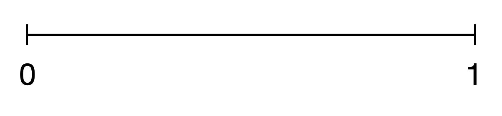
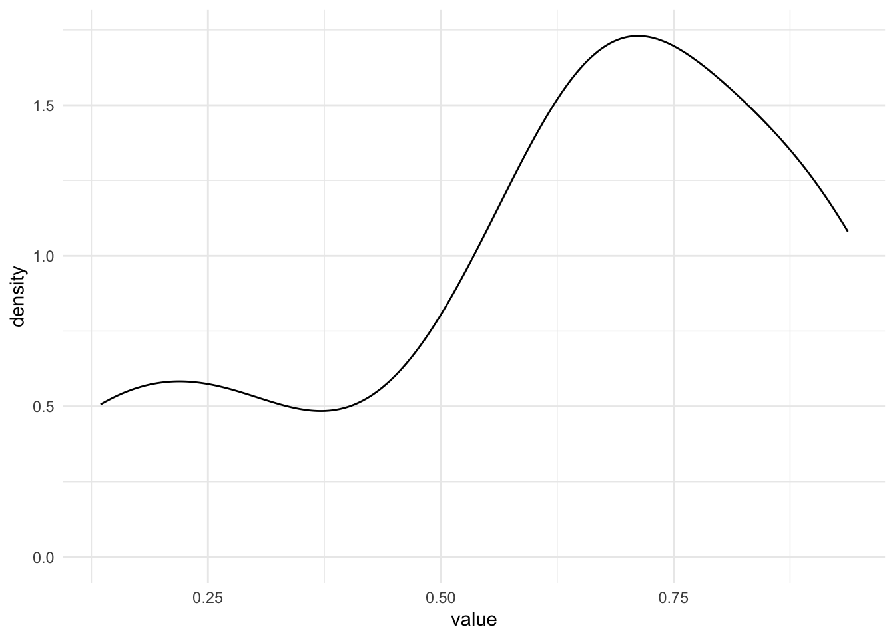
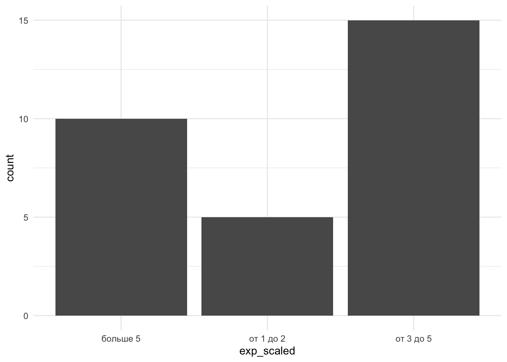

4 Вероятности и распределения
4.1 Случайная величина
Мы немного поговорили про переменные, они же – признаки исследуего нами объекта (рост, вес, пол, уровень образования и так далее). Поговорили, что чтобы измерить признак, нужно привести в соответствие какое-либо значение из шкалы. Теперь давайте посмотрим на математический смысл переменных и их значений.
С математической точки зрения значения переменных являются случайными величинами. В теории вероятностей случайной величиной называется величина, которая в данный момент времени (момент измерения) может принимать только одно значение, определенное стечением случайных обстоятельств, которое нельзя предугадать точно.
Нам нужно замерить рост? Можем ли мы заранее сказать, сколько точно вплоть до микрометров он будет составлять? Влияют ли на него прямо сейчас какие-то факторы? Если нет, значит, мы провели испытание (статистический термин единичного исследования или измерения), в ходе которого случайная величина рост приняла определенное значение (мы привели ей в соответствие какое-то значение из количественной шкалы). Говоря статистическим языком, наступило событие “РОСТ = 178 см”.
Нужно определить время реакции после выпитой кружки кофе? Все то же самое, время реакции – случайная величина.
Результат прохождения опросника – случайная величина.
Название ВУЗа, из которого пришел наш испытуемый – случайная величина.
Это понятие нужно нам для того, чтобы мы могли считать вероятности наступления определенных событий, то есть наших измеренных переменных. Дело в том, что про вероятности случайных величин нам плюс-минус понятно и просто, а вот если величина перестает быть случайной, расчет вероятности становится сложнее. И мы пока рассматриваем только случайные величины.
Что такое вероятность?
Есть разные определения, в рамках статистики различают статистическое и геометрическое определение вероятностей. Можно углубиться на http://mathprofi.ru/sluchainaya_velichina.html Пока воспользуемся статистическим определением, не углубляясь в статистические термины: если при проведении испытания возможны \(n\) равновероятных исходов значений случайной величины \(A\), при этом в \(m\) из них случается интересующее нас конкретное событие \(A_{i}\),то вероятность наступления события \(P(A_{i}) = \frac{m}{n}\)
4.2 Дискретные случайные величины и гистограмма
Самая часто используемая в теории вероятностей модель – бросание игрального кубика.

Бросание игрального кубика – это испытание, выпадение одной из граний – исход, а выпадение конкретно шестерки – событие.
Обозначим выпадние грани в результате бросания кубика буквой \(K\). Чему равна вероятность выпадения каждой грани \(K_{1}\), \(K_{2}\), \(K_{3}\), \(K_{4}\), \(K_{5}\), \(K_{6}\)?
По статистическому определению вероятности: возможных исходов всего – 6, интересующее нас событие случается в одном случае из 6, то есть: \(P(K_{1})\) = \(P(K_{2})\) = \(P(K_{3})\) = \(P(K_{4})\) = \(P(K_{5})\) = \(P(K_{6})\) = \(\frac{1}{6}\)
Важно, что все события равновероятны. Если бы мы жили в мире с кубиками со смещенным центром тяжести, выпадние граней не было бы равновероятным.
А чему равна полная вероятность?
Как можно вывести это математически из вероятностей наступления событий в бросании игрального кубика? \(P(K_{1})\) + \(P(K_{2})\) + \(P(K_{3})\) + \(P(K_{4})\) + \(P(K_{5})\) + \(P(K_{6})\) = \(1\)
Единичные события нас мало интересуют (предмет изучения теории вероятностей – массовые события), поэтому давайте представим, что мы бросили кубик несколько раз. Например, 20.
## Red
## 1 2
## 2 5
## 3 4
## 4 3
## 5 6
## 6 6
## 7 2
## 8 4
## 9 1
## 10 2
## 11 6
## 12 6
## 13 4
## 14 1
## 15 6
## 16 3
## 17 4
## 18 3
## 19 6
## 20 2Построим таблицу частот выпадения каждой грани
## rolls
## 1 2 3 4 5 6
## 2 4 3 4 1 6## rolls
## 1 2 3 4 5 6
## 0.10 0.20 0.15 0.20 0.05 0.30Можем наглядно посмотреть это на гистограмме – графике, отобрающем частоты встречаемости событий.

Гистограмма – это частный случай столбиковой диаграммы.
4.3 Непрерывные случайные величины и плотность вероятности
С непрерывными величинами чуть посложнее, поэтому нам понадобится геометрическое определение вероятности.
Построим отрезок на оси \(x\) от 0 до 1. 
Допустим, мы проводим испытание, где бесконечно малым курсором проводим по этому отрезку. Остановка курсора в какой-то точке обозначим за \(L\). Какова вероятность, что курсор остановится в точке с координатами \(x=0.4857856\)?
\(P(L_{.4857856}) = \frac{1}{множество всех точек на отрезке} = \frac{1}{\infty} \sim 0\)
В пределе это число равно 0.
Получается, что мы не можем посчитать математически (статистически), и приходится прибегать к геометрическому определению. Построим таблицу и график частот для значений из отрезка
## [1] 0.14034225 0.69788337 0.02045433 0.68512093 0.05781386 0.59506258
## [7] 0.01780745 0.70456399 0.07141894 0.59507905## line_sample
## 0.0178074471186846 0.0204543250147253 0.0578138625714928 0.0714189358986914
## 1 1 1 1
## 0.140342245809734 0.595062575768679 0.595079048536718 0.685120934154838
## 1 1 1 1
## 0.69788337382488 0.704563989071175
## 1 1
## [1] 0.6277905959 0.9890796233 0.9074471691 0.9214695529 0.6674210008
## [6] 0.5536439938 0.3521777780 0.8592636781 0.5549610734 0.8213395297
## [11] 0.4964633645 0.7132872883 0.0792174211 0.5175306159 0.5393855684
## [16] 0.6349990023 0.0759146130 0.3082391550 0.8238223179 0.6134034670
## [21] 0.2349656604 0.3982562099 0.4051179437 0.1950746269 0.4151194489
## [26] 0.5070465868 0.9809129816 0.7113399922 0.7210212641 0.6261199957
## [31] 0.8348325025 0.3868241620 0.4359536609 0.0045591150 0.3271037384
## [36] 0.1932325037 0.5929185573 0.0954728343 0.0701557072 0.9274350030
## [41] 0.5959016988 0.3178945002 0.2562446364 0.7315233294 0.4825723469
## [46] 0.9550599114 0.1304927249 0.0264014523 0.0807270862 0.7190345214
## [51] 0.7657217996 0.0903633574 0.8310767775 0.4780358458 0.7780972919
## [56] 0.6926665271 0.6329263188 0.0147763758 0.0060263451 0.1778867929
## [61] 0.8468229473 0.9623897285 0.6007066495 0.1275152015 0.4971192991
## [66] 0.4146504868 0.4434590572 0.3860130303 0.5501308208 0.5256471373
## [71] 0.1625969769 0.3744505115 0.5235258169 0.0538534855 0.1700373848
## [76] 0.7228460307 0.9360406375 0.0663974944 0.9984958395 0.2831092214
## [81] 0.1972871269 0.6497890721 0.2190288240 0.4377611894 0.8312431762
## [86] 0.3142391685 0.1195087384 0.6215697436 0.8497818809 0.5868482240
## [91] 0.7962850893 0.6851617678 0.8096902571 0.8321501692 0.7141447046
## [96] 0.6865399466 0.7956670013 0.9207527309 0.2490177532 0.3312539526
## [101] 0.4556188886 0.8878040421 0.1320054552 0.9854621291 0.6295471436
## [106] 0.4805064274 0.3603236664 0.2968744745 0.3659979561 0.6066596957
## [111] 0.5928183661 0.8826271049 0.6166193180 0.7102419012 0.3044425172
## [116] 0.6790204891 0.1384745734 0.4768126146 0.5228765723 0.9802157851
## [121] 0.5526566789 0.2276338623 0.1785992880 0.9229224578 0.5672987523
## [126] 0.0799722911 0.0483699110 0.6271649851 0.5092106019 0.8344408441
## [131] 0.8361760532 0.4199496957 0.2848899742 0.7813904064 0.9472976422
## [136] 0.7117867633 0.8276962736 0.0060325041 0.3091144240 0.2995788669
## [141] 0.6830591939 0.1693314237 0.3059404208 0.0867613438 0.0302793260
## [146] 0.0273025297 0.6525454368 0.9768401871 0.0546978172 0.9685603448
## [151] 0.3228020729 0.1133856922 0.8093870282 0.7512033512 0.0766344990
## [156] 0.1454871586 0.7339130249 0.4985141354 0.1338694151 0.2132268655
## [161] 0.4698756926 0.6827103458 0.1349972165 0.6886184437 0.7000399674
## [166] 0.7417590029 0.9268486791 0.8732986480 0.9553051528 0.3742306840
## [171] 0.2960815993 0.5736116818 0.7065165387 0.5825622072 0.8744037750
## [176] 0.5188551918 0.5181727577 0.9173914085 0.9413250734 0.2315052748
## [181] 0.6908731079 0.6654751676 0.8745350183 0.7458051573 0.5034697747
## [186] 0.4327799869 0.3141698623 0.3515321009 0.9260537515 0.0701845591
## [191] 0.5715024630 0.9984097336 0.8257788757 0.4981773149 0.3192572906
## [196] 0.4833803526 0.6410120847 0.6201245247 0.7317443986 0.8898550372
## [201] 0.2732504595 0.6549467936 0.7741387719 0.1320758460 0.2133806592
## [206] 0.9313421026 0.6376353237 0.3595430159 0.6436948257 0.3982385425
## [211] 0.9129667927 0.0888207492 0.6610700851 0.1778589720 0.1441504906
## [216] 0.7125472755 0.5339889606 0.7444023159 0.5104008436 0.2325256921
## [221] 0.9212051730 0.5352421836 0.6581918008 0.7666416967 0.5547220989
## [226] 0.3536707594 0.7251419225 0.8362123771 0.8776151782 0.5373951935
## [231] 0.7845987012 0.0970110714 0.4781629576 0.9928589698 0.4302550275
## [236] 0.1544170920 0.7332342402 0.5088738226 0.5769699104 0.7594371373
## [241] 0.2086274738 0.7109997259 0.7094161916 0.2553137767 0.0687225962
## [246] 0.3673877318 0.3935662024 0.0633664003 0.7421375737 0.1112755670
## [251] 0.6152740277 0.7689315930 0.3825656171 0.4536751448 0.1866729835
## [256] 0.9969229046 0.2005071186 0.3284679495 0.3972201371 0.6863259450
## [261] 0.2605391198 0.4950566245 0.5763913214 0.7069801844 0.3778852946
## [266] 0.6074089366 0.6102569841 0.4774225829 0.9797161128 0.8712641196
## [271] 0.2501426265 0.6678799600 0.5243909464 0.8870312360 0.0912956535
## [276] 0.6654556538 0.5471376316 0.1007481627 0.3204215106 0.6457106713
## [281] 0.9959176087 0.1864379253 0.5842088438 0.7653353205 0.3671966912
## [286] 0.4352699181 0.7369654349 0.4041080792 0.4485055420 0.3385904480
## [291] 0.7648511420 0.8798861632 0.6945556055 0.7925101570 0.6197061918
## [296] 0.5288258321 0.6107661319 0.9451847344 0.9045431588 0.8865881143
## [301] 0.0071040990 0.8735029716 0.2316730404 0.3735439130 0.8956502634
## [306] 0.3162431668 0.7943362237 0.8702206227 0.5267286082 0.5007391539
## [311] 0.0884142886 0.4765210394 0.9427993530 0.2756956145 0.2833126581
## [316] 0.8506252461 0.6582912414 0.7368271630 0.8259943461 0.5617263471
## [321] 0.2133160620 0.0639343534 0.8644167769 0.8752473476 0.9850013892
## [326] 0.5503391735 0.7817789579 0.3057182366 0.5057020620 0.4794441673
## [331] 0.7189110236 0.6190167738 0.6262954758 0.1664862302 0.4217934909
## [336] 0.5252741389 0.6156507444 0.1597407623 0.9116043497 0.7750182375
## [341] 0.5554767346 0.0757070840 0.6383943534 0.8121262677 0.8018794749
## [346] 0.7986957126 0.9704981332 0.7561773241 0.8689696160 0.4821834920
## [351] 0.9942593309 0.9786918287 0.2350088374 0.9496289731 0.7521521158
## [356] 0.1040950124 0.9260522374 0.5115410851 0.1026702749 0.6165579751
## [361] 0.4091984930 0.4504551741 0.5766907218 0.9263031587 0.6486442443
## [366] 0.2420027209 0.3080364871 0.8992339815 0.0187244639 0.1868603851
## [371] 0.5386716679 0.6736278506 0.8653057576 0.7059935629 0.2153787224
## [376] 0.9504470387 0.6681800082 0.1453515720 0.3730334041 0.8620859198
## [381] 0.1011105785 0.0768572439 0.2721486206 0.7826656178 0.0108205350
## [386] 0.5226530700 0.0992341235 0.2470602610 0.9792949888 0.6408461351
## [391] 0.8893527682 0.9043690772 0.9989553690 0.8841025438 0.2130032976
## [396] 0.2050855826 0.1972671989 0.3004662958 0.6525528131 0.1687204067
## [401] 0.9353850631 0.9566402815 0.6488102374 0.6316330791 0.5193070427
## [406] 0.6136795098 0.1629729234 0.0055593771 0.7128267186 0.0848769159
## [411] 0.7951159170 0.4201245003 0.2389764029 0.6477901808 0.2401073584
## [416] 0.6523581112 0.4833965325 0.0818503059 0.0677858989 0.1996996794
## [421] 0.9319769146 0.3947656595 0.3582824389 0.3825014774 0.3566139906
## [426] 0.6498027525 0.8771838914 0.3070203189 0.4887659762 0.5117084533
## [431] 0.2428710116 0.9034330223 0.6320580640 0.9066161986 0.5655584852
## [436] 0.6877117227 0.8181239360 0.8673118488 0.4519962603 0.8189925402
## [441] 0.8626688332 0.6415571079 0.4710392740 0.9935164941 0.7566995835
## [446] 0.1340095650 0.4755889585 0.2969518022 0.5362681204 0.2374101747
## [451] 0.7794965054 0.4777894090 0.8460321992 0.6049298621 0.4469786615
## [456] 0.8105609501 0.4641333297 0.7072340127 0.3651798856 0.7694576348
## [461] 0.6910971396 0.5057362597 0.4403124186 0.1730067895 0.8564952435
## [466] 0.0883939934 0.5624736426 0.2599246989 0.9358060542 0.6265152001
## [471] 0.8998046587 0.5611397400 0.2381453598 0.1320555613 0.8567481469
## [476] 0.0915641512 0.0006666987 0.7342280254 0.0086260701 0.2672472908
## [481] 0.8312528913 0.9758906122 0.2728690978 0.7222770837 0.5901445318
## [486] 0.4198253988 0.3206347935 0.1394636133 0.2321057613 0.4466266138
## [491] 0.1706765194 0.1231007045 0.5164509907 0.5501802652 0.1959790741
## [496] 0.3975007606 0.3238296711 0.1286687979 0.7692015336 0.6089400281## line_sample
## 0.000666698673740029 0.00455911504104733 0.00555937713943422
## 1 1 1
## 0.00602634507231414 0.00603250414133072 0.00710409902967513
## 1 1 1
## 0.00862607010640204 0.0108205350115895 0.014776375843212
## 1 1 1
## 0.0187244638800621 0.026401452254504 0.0273025296628475
## 1 1 1
## 0.0302793260198087 0.0483699110336602 0.05385348550044
## 1 1 1
## 0.0546978171914816 0.0633664003107697 0.0639343534130603
## 1 1 1
## 0.0663974944036454 0.0677858989220113 0.0687225961592048
## 1 1 1
## 0.0701557071879506 0.0701845590956509 0.0757070840336382
## 1 1 1
## 0.0759146129712462 0.0766344990115613 0.0768572438973933
## 1 1 1
## 0.079217421123758 0.0799722911324352 0.0807270861696452
## 1 1 1
## 0.081850305898115 0.0848769159056246 0.0867613437585533
## 1 1 1
## 0.0883939934428781 0.0884142885915935 0.0888207491952926
## 1 1 1
## 0.0903633574489504 0.091295653488487 0.0915641512256116
## 1 1 1
## 0.0954728343058378 0.0970110713969916 0.0992341234814376
## 1 1 1
## 0.100748162716627 0.101110578514636 0.102670274907723
## 1 1 1
## 0.1040950124152 0.111275566974655 0.113385692238808
## 1 1 1
## 0.119508738396689 0.12310070451349 0.127515201456845
## 1 1 1
## 0.1286687979009 0.130492724943906 0.132005455205217
## 1 1 1
## 0.132055561291054 0.13207584596239 0.133869415149093
## 1 1 1
## 0.134009564993903 0.134997216518968 0.138474573381245
## 1 1 1
## 0.139463613275439 0.144150490639731 0.145351571962237
## 1 1 1
## 0.145487158559263 0.154417091980577 0.159740762319416
## 1 1 1
## 0.162596976850182 0.162972923368216 0.166486230213195
## 1 1 1
## 0.168720406712964 0.169331423705444 0.170037384843454
## 1 1 1
## 0.170676519395784 0.173006789525971 0.177858971990645
## 1 1 1
## 0.177886792924255 0.178599287988618 0.186437925323844
## 1 1 1
## 0.186672983458266 0.186860385118052 0.193232503719628
## 1 1 1
## 0.195074626943097 0.195979074109346 0.197267198935151
## 1 1 1
## 0.197287126909941 0.199699679389596 0.200507118599489
## 1 1 1
## 0.205085582565516 0.208627473795786 0.21300329756923
## 1 1 1
## 0.213226865511388 0.213316061999649 0.213380659231916
## 1 1 1
## 0.215378722408786 0.219028824009001 0.227633862290531
## 1 1 1
## 0.231505274772644 0.231673040427268 0.232105761300772
## 1 1 1
## 0.232525692088529 0.234965660376474 0.235008837422356
## 1 1 1
## 0.237410174682736 0.238145359791815 0.238976402906701
## 1 1 1
## 0.240107358433306 0.242002720944583 0.242871011607349
## 1 1 1
## 0.247060260968283 0.249017753172666 0.250142626464367
## 1 1 1
## 0.255313776666299 0.256244636373594 0.259924698853865
## 1 1 1
## 0.260539119830355 0.267247290816158 0.272148620570078
## 1 1 1
## 0.272869097767398 0.273250459460542 0.275695614516735
## 1 1 1
## 0.283109221374616 0.283312658080831 0.284889974165708
## 1 1 1
## 0.296081599313766 0.296874474501237 0.296951802214608
## 1 1 1
## 0.299578866921365 0.300466295797378 0.304442517226562
## 1 1 1
## 0.305718236602843 0.305940420832485 0.307020318927243
## 1 1 1
## 0.308036487083882 0.308239154983312 0.309114424046129
## 1 1 1
## 0.314169862307608 0.314239168539643 0.316243166802451
## 1 1 1
## 0.317894500214607 0.319257290568203 0.320421510608867
## 1 1 1
## 0.320634793490171 0.322802072856575 0.323829671135172
## 1 1 1
## 0.327103738440201 0.328467949526384 0.331253952579573
## 1 1 1
## 0.338590448023751 0.351532100932673 0.352177778026089
## 1 1 1
## 0.353670759359375 0.356613990617916 0.358282438945025
## 1 1 1
## 0.359543015947565 0.360323666362092 0.365179885644466
## 1 1 1
## 0.365997956134379 0.367196691222489 0.367387731792405
## 1 1 1
## 0.37303340411745 0.373543913010508 0.374230684014037
## 1 1 1
## 0.374450511531904 0.377885294612497 0.382501477375627
## 1 1 1
## 0.382565617095679 0.386013030307367 0.386824161978438
## 1 1 1
## 0.393566202372313 0.394765659468248 0.397220137063414
## 1 1 1
## 0.39750076062046 0.398238542489707 0.398256209911779
## 1 1 1
## 0.404108079150319 0.405117943650112 0.409198492998257
## 1 1 1
## 0.414650486782193 0.415119448909536 0.419825398828834
## 1 1 1
## 0.41994969570078 0.420124500291422 0.4217934908811
## 1 1 1
## 0.430255027487874 0.432779986876994 0.43526991805993
## 1 1 1
## 0.435953660868108 0.437761189416051 0.440312418621033
## 1 1 1
## 0.443459057249129 0.446626613847911 0.446978661464527
## 1 1 1
## 0.448505542008206 0.45045517408289 0.45199626032263
## 1 1 1
## 0.45367514481768 0.455618888605386 0.464133329689503
## 1 1 1
## 0.469875692622736 0.471039274008945 0.475588958477601
## 1 1 1
## 0.476521039381623 0.476812614593655 0.477422582916915
## 1 1 1
## 0.477789408992976 0.478035845793784 0.478162957588211
## 1 1 1
## 0.4794441673439 0.480506427353248 0.482183492043987
## 1 1 1
## 0.482572346925735 0.483380352612585 0.483396532479674
## 1 1 1
## 0.488765976158902 0.495056624524295 0.496463364455849
## 1 1 1
## 0.497119299136102 0.498177314875647 0.498514135368168
## 1 1 1
## 0.500739153940231 0.503469774732366 0.505702062044293
## 1 1 1
## 0.505736259743571 0.507046586833894 0.508873822633177
## 1 1 1
## 0.509210601914674 0.510400843573734 0.5115410850849
## 1 1 1
## 0.511708453297615 0.516450990689918 0.517530615907162
## 1 1 1
## 0.518172757700086 0.518855191767216 0.519307042704895
## 1 1 1
## 0.522653070045635 0.522876572329551 0.523525816854089
## 1 1 1
## 0.524390946375206 0.525274138897657 0.525647137314081
## 1 1 1
## 0.526728608179837 0.528825832065195 0.533988960552961
## 1 1 1
## 0.535242183599621 0.536268120398745 0.537395193474367
## 1 1 1
## 0.538671667920426 0.539385568350554 0.547137631569058
## 1 1 1
## 0.550130820833147 0.550180265214294 0.550339173525572
## 1 1 1
## 0.552656678948551 0.553643993800506 0.554722098866478
## 1 1 1
## 0.554961073445156 0.555476734647527 0.561139740049839
## 1 1 1
## 0.561726347077638 0.562473642639816 0.565558485221118
## 1 1 1
## 0.567298752255738 0.57150246296078 0.573611681815237
## 1 1 1
## 0.576391321374103 0.576690721791238 0.576969910413027
## 1 1 1
## 0.582562207244337 0.584208843763918 0.586848224047571
## 1 1 1
## 0.590144531801343 0.592818366130814 0.59291855734773
## 1 1 1
## 0.595901698805392 0.600706649478525 0.604929862078279
## 1 1 1
## 0.606659695738927 0.607408936601132 0.608940028119832
## 1 1 1
## 0.610256984131411 0.610766131896526 0.613403466995806
## 1 1 1
## 0.613679509842768 0.615274027688429 0.615650744410232
## 1 1 1
## 0.616557975066826 0.616619318025187 0.619016773765907
## 1 1 1
## 0.619706191821024 0.620124524692073 0.621569743612781
## 1 1 1
## 0.626119995722547 0.626295475754887 0.626515200128779
## 1 1 1
## 0.627164985053241 0.627790595870465 0.629547143587843
## 1 1 1
## 0.631633079145104 0.632058063987643 0.632926318794489
## 1 1 1
## 0.634999002330005 0.637635323684663 0.638394353445619
## 1 1 1
## 0.640846135094762 0.641012084670365 0.641557107912377
## 1 1 1
## 0.643694825703278 0.645710671320558 0.647790180752054
## 1 1 1
## 0.648644244298339 0.648810237413272 0.649789072107524
## 1 1 1
## 0.649802752537653 0.652358111226931 0.652545436751097
## 1 1 1
## 0.652552813058719 0.654946793569252 0.658191800815985
## 1 1 1
## 0.658291241386905 0.661070085130632 0.665455653797835
## 1 1 1
## 0.66547516756691 0.667421000776812 0.667879960034043
## 1 1 1
## 0.668180008186027 0.673627850599587 0.679020489100367
## 1 1 1
## 0.682710345834494 0.683059193892404 0.685161767760292
## 1 1 1
## 0.686325944960117 0.686539946589619 0.687711722683161
## 1 1 1
## 0.688618443673477 0.690873107872903 0.691097139613703
## 1 1 1
## 0.692666527116671 0.694555605528876 0.700039967428893
## 1 1 1
## 0.705993562936783 0.706516538746655 0.706980184419081
## 1 1 1
## 0.707234012661502 0.709416191559285 0.710241901222616
## 1 1 1
## 0.710999725852162 0.711339992238209 0.711786763276905
## 1 1 1
## 0.71254727547057 0.712826718576252 0.713287288323045
## 1 1 1
## 0.714144704630598 0.718911023577675 0.719034521374851
## 1 1 1
## 0.721021264092997 0.722277083666995 0.722846030723304
## 1 1 1
## 0.725141922477633 0.731523329392076 0.731744398595765
## 1 1 1
## 0.733234240207821 0.733913024887443 0.734228025423363
## 1 1 1
## 0.736827163025737 0.736965434858575 0.741759002907202
## 1 1 1
## 0.74213757365942 0.744402315933257 0.745805157348514
## 1 1 1
## 0.751203351188451 0.752152115805075 0.756177324103191
## 1 1 1
## 0.756699583493173 0.759437137283385 0.764851141953841
## 1 1 1
## 0.765335320495069 0.76572179957293 0.7666416966822
## 1 1 1
## 0.768931593047455 0.769201533636078 0.769457634771243
## 1 1 1
## 0.774138771928847 0.775018237531185 0.778097291942686
## 1 1 1
## 0.779496505390853 0.78139040642418 0.7817789579276
## 1 1 1
## 0.782665617763996 0.784598701167852 0.792510156985372
## 1 1 1
## 0.794336223741993 0.795115916989744 0.795667001279071
## 1 1 1
## 0.796285089338198 0.79869571258314 0.801879474893212
## 1 1 1
## 0.809387028217316 0.809690257068723 0.81056095007807
## 1 1 1
## 0.812126267701387 0.818123935954645 0.818992540240288
## 1 1 1
## 0.821339529706165 0.823822317877784 0.825778875732794
## 1 1 1
## 0.825994346057996 0.827696273569018 0.831076777540147
## 1 1 1
## 0.831243176246062 0.831252891337499 0.832150169182569
## 1 1 1
## 0.834440844133496 0.834832502529025 0.836176053155214
## 1 1 1
## 0.83621237706393 0.846032199217007 0.846822947263718
## 1 1 1
## 0.849781880853698 0.850625246064737 0.856495243497193
## 1 1 1
## 0.856748146936297 0.859263678081334 0.862085919827223
## 1 1 1
## 0.862668833229691 0.864416776923463 0.865305757615715
## 1 1 1
## 0.867311848793179 0.86896961601451 0.870220622746274
## 1 1 1
## 0.871264119632542 0.87329864804633 0.873502971604466
## 1 1 1
## 0.874403774971142 0.874535018345341 0.875247347634286
## 1 1 1
## 0.877183891367167 0.877615178236738 0.879886163165793
## 1 1 1
## 0.8826271048747 0.88410254381597 0.886588114313781
## 1 1 1
## 0.887031235964969 0.88780404208228 0.88935276819393
## 1 1 1
## 0.889855037210509 0.895650263410062 0.899233981501311
## 1 1 1
## 0.899804658722132 0.903433022322133 0.904369077179581
## 1 1 1
## 0.904543158831075 0.906616198597476 0.907447169069201
## 1 1 1
## 0.911604349734262 0.912966792704538 0.917391408467665
## 1 1 1
## 0.920752730919048 0.921205173013732 0.921469552908093
## 1 1 1
## 0.922922457801178 0.926052237395197 0.926053751492873
## 1 1 1
## 0.926303158747032 0.926848679082468 0.927435002988204
## 1 1 1
## 0.931342102587223 0.931976914638653 0.935385063057765
## 1 1 1
## 0.935806054156274 0.936040637549013 0.941325073363259
## 1 1 1
## 0.942799353040755 0.945184734417126 0.947297642240301
## 1 1 1
## 0.949628973146901 0.95044703874737 0.955059911357239
## 1 1 1
## 0.955305152805522 0.956640281481668 0.962389728520066
## 1 1 1
## 0.968560344772413 0.970498133217916 0.975890612229705
## 1 1 1
## 0.976840187096968 0.97869182866998 0.97929498879239
## 1 1 1
## 0.979716112837195 0.980215785093606 0.980912981554866
## 1 1 1
## 0.985001389170066 0.985462129116058 0.989079623250291
## 1 1 1
## 0.99285896983929 0.993516494054347 0.994259330909699
## 1 1 1
## 0.995917608728632 0.996922904625535 0.998409733641893
## 1 1 1
## 0.99849583953619 0.998955368995667
## 1 1 Это график плотности вероятности (probability density).
Это график плотности вероятности (probability density).
Мы не можем построить график частот для непрерывных случайных величин – они все будут равны единице. но мы можем как бы объединить близ лежащие очки и примерно оценить встречаемость этих точек в нашей выборке. Если мы нарисуем такой график, то мы можем рассчитыать вероятность как площадь под кривой графика плотности вероятности.
Закон распределения случайной величины – это соответствие между возможными значениями этой величины и их вероятностями.
Итак, запомнили, что мы рассматриваем признаки (переменные) как случайные величины, они могут быть дисркетные и непрерывные, и их вероятности описываются определенными законами распределения.
4.4 Распределения
Функция плотности вероятности (cumulative distribution function; cdf)

Функция накопленной плотности (cumulative distribution function; cdf)

Здесь начинается неожиданная развилка: в зависимости от того, как мы понимаем вероятность, статистика делится на байесовскую и частотную (фреквинтистскую, frequentist). Статистика, которую мы сейчас обсуждаем, называется фреквентистской (частотной) https://en.wikipedia.org/wiki/Frequentist_inference
4.5 Распределения
Выборочное распределение и распределения для генеральной совокупности.
| teacher_number | age | exp_years | exp_scaled | burnout_MBI | univer |
|---|---|---|---|---|---|
| 1 | 50 | 2 | от 1 до 2 | 25 | MSU |
| 2 | 31 | 8 | больше 5 | 41 | HSE |
| 3 | 22 | 2 | от 1 до 2 | 28 | MSU |
| 4 | 46 | 8 | больше 5 | 34 | RANEPA |
| 5 | 31 | 3 | от 3 до 5 | 65 | HSE |
| 6 | 29 | 2 | от 1 до 2 | 47 | RANEPA |
| 7 | 49 | 5 | от 3 до 5 | 36 | MSU |
| 8 | 23 | 4 | от 3 до 5 | 23 | HSE |
| 9 | 44 | 2 | от 1 до 2 | 37 | MSU |
| 10 | 30 | 2 | от 1 до 2 | 22 | RANEPA |
| 11 | 52 | 8 | больше 5 | 63 | HSE |
| 12 | 53 | 3 | от 3 до 5 | 68 | RANEPA |
| 13 | 53 | 3 | от 3 до 5 | 47 | MSU |
| 14 | 31 | 5 | от 3 до 5 | 46 | HSE |
| 15 | 50 | 5 | от 3 до 5 | 32 | MSU |
| 16 | 33 | 8 | больше 5 | 67 | RANEPA |
| 17 | 56 | 3 | от 3 до 5 | 23 | HSE |
| 18 | 55 | 6 | больше 5 | 25 | RANEPA |
| 19 | 39 | 7 | больше 5 | 21 | MSU |
| 20 | 40 | 5 | от 3 до 5 | 39 | HSE |
| 21 | 36 | 7 | больше 5 | 42 | MSU |
| 22 | 41 | 2 | от 1 до 2 | 66 | RANEPA |
| 23 | 35 | 7 | больше 5 | 39 | HSE |
| 24 | 35 | 5 | от 3 до 5 | 27 | RANEPA |
| 25 | 36 | 7 | больше 5 | 42 | MSU |
| 26 | 27 | 5 | от 3 до 5 | 66 | HSE |
| 27 | 26 | 8 | больше 5 | 65 | MSU |
| 28 | 59 | 7 | больше 5 | 37 | RANEPA |
| 29 | 57 | 7 | больше 5 | 70 | HSE |
| 30 | 32 | 3 | от 3 до 5 | 59 | RANEPA |


tibble(x = 1:100,
PDF = dnorm(x = x, mean = 50, sd = 10)) %>%
ggplot(aes(x, PDF))+
geom_point()+
labs(title = "PDF нормального распределения (μ = 50, sd = 10)")
4.6 Распределения
Посмотреть и ужаснуться можно тут http://www.math.wm.edu/~leemis/chart/UDR/UDR.html. Нам, к счастью, ничего из этого не понадобится.
Менее пугающая версия https://www.johndcook.com/blog/distribution_chart/#normal
4.6.1 Нормальное распределение
\(P(x) = \frac{e^{-(x - \mu)^{2}/(2\sigma^{2}) }} {\sigma\sqrt{2\pi}}\)
4.6.2 Другие распределения
Биномиальное распределение
\(P(k | n, p) = \frac{n!}{k!(n-k)!} \times p^k \times (1-p)^{n-k} = {n \choose k} \times p^k \times (1-p)^{n-k}\)
tibble(x = 0:50,
density = dbinom(x = x, size = 50, prob = 0.16)) %>%
ggplot(aes(x, density))+
geom_point()+
geom_line()+
labs(title = "Биномиальное распределение p = 0.16, n = 50") +
theme_minimal()
Экспоненциальное распределение
$ P(x)= e^{-x}$
tibble(x = 1:20,
PDF = dexp(x = x, rate = 0.5)) %>%
ggplot(aes(x, PDF))+
geom_point()+
geom_line()+
labs(title = "PDF экспоненциального распредления с коэффициентом и")